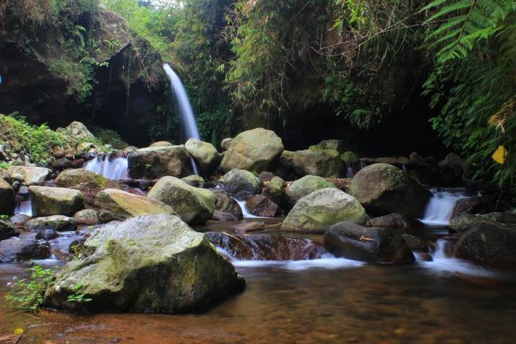

Capolaga
Capolaga adalah wisata alam yang berada di Kabupaten Subang, Jawa Barat. Tepatnya berada di Kp. Panaruban, Cicadas, Sagalaherang. Capolaga berada di area seluas 10 hektar yang mempunyai keindahan ekosistem Sungai Cimuja yang unik yang dikelola secara kaidah alam.
Wisata Alam Capolaga merupakan destinasi wisata alam berupa bumi perkemahan yang terkenal di Subang. Obyek wisata ini menghadirkan wahana camping serta aktivitas outdoor yang menarik bagi anda. Subang memang tak ada habisnya menyuguhkan wisata berbasis alam, kuliner, sejarah, maupun seni dan budaya. Tak heran jika banyak destinasi wisata yang populer dan menjadi andalan para wisatawan untuk menghabiskan waktu liburan. Pembangunan Wisata Alam Capolaga ini dimulai pada tahun 2001 dengan luas lahan mencapai 10 hektar. Kemudian baru dibuka secara resmi pada tahun 2004 silam. Uniknya didalam kawasan wisata tersebut terdapat 3 curug dalam satu area yang berdekatan. Curug Capolaga sendiri terdiri dari Curug Goa Badak, Karembang, dan Sawer yang ketiganya memiliki ciri khas tersendiri. Curug di Subang ini bisa menjadi aktivitas adventure yang bisa anda lakukan untuk mengisi kegiatan anda selama berada disana. Banyak aktivitas lainnya yang tak kalah seru untuk dilakukan seperti outbond, camping, wahana menarik, serta masih banyak lainnya. Liburan akhir pekan anda akan lebih asik jika merencanakan berkunjung ke Wisata Alam Capolaga satu ini.